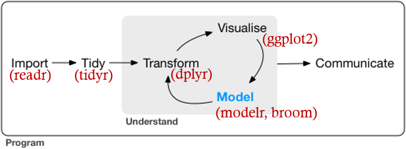

Intro to AGRON590 RD: R for Data Science
Ranae Dietzel
World of R
- R was developed from S and introduced in 1996
- The creators thought it would be used by only a handful of people
- Now second most popular Data Science software (after SPSS)
Base R
- Base R is what you get if you download only R
- It runs all of your basic functions
- Includes some of the earliest developments and changes very slowly
- Very stable and dependable
- Built with code-familiar people in mind
Packages
- People put together R code to do specific tasks
- These packages must be installed and called on top of base R
- Packages include documentation and examples
Tidyverse
- A place where people and their mental well-being are valued
- Welcoming to non-programmers
- Seeks to be a utopia of data science
- One of many R universes
Philosophy best explained by creator
Hadley Wickham’s talk from UseR! 2016 Tools for tidy data
If someone is making a “pit of success”, you should probably walk towards it.
What is it?
Collection of R packages designed to work around a common philosophy.

R + RStudio
- R is the engine
- RStudio is a dashboard
- We will install both, get into RStudio later
- RStudio and the Tidyverse are best friends
R4DS
- This book was written for scientists who want to get started driving the car without worrying about how the engine was built
- This book avoids a lot of stats
- In Tidyverse fashion, feedback on this book is appreciated so we can someday reach data science textbook utopia
- Available for free online (it evolves) or you can buy a paperback on Amazon
Syllabus
- Each week you will read some of the book on your own.
- We will meet here as you work on the exercises included in the sections
- We will help each other out
- We will adjust our speed according to the class
- I will provide additional exercises to push some of you
Course Objectives
- Data Visualization
- Exploratory Data Analysis
- Basic Data Structures
- Workflows
- Getting Comfortable with R
Assessment
- Attendance
- Participation
- If you are not meeting expectations, I will let you know
- We all have a common goal for you to learn, and I will remind you of your goal
Discourse
- I have set up a “discussion community” on Discourse
- Please post all questions here
- Feel free to answer questions
- Would be awesome if people post general observations and comments (aka, “discussion”)
- If you need to miss a class, you will need to “attend” through this forum instead
To-do for next week
- Install R and RStudio on your computer (or VM)
- Read Sections 1-3.4 in R for Data Science
- Post “Introduction” on Agron R4DS discourse forum